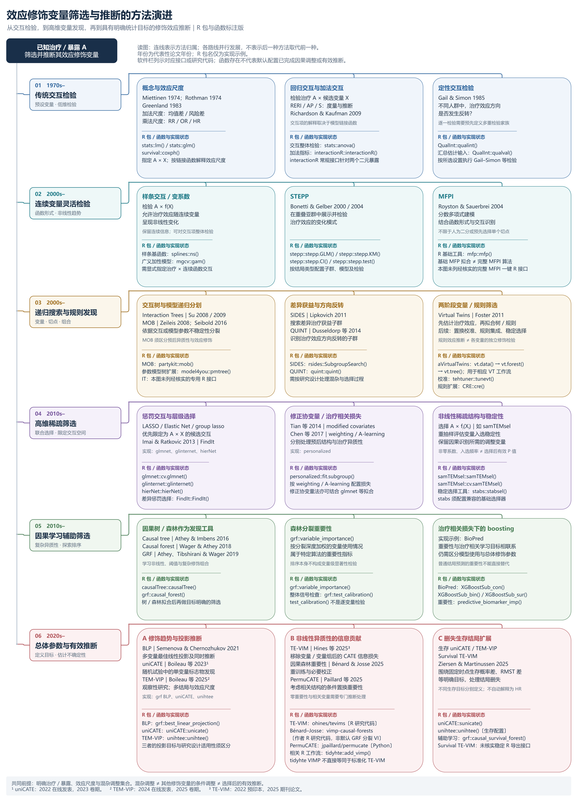

效应修饰的效应尺度：这些 R 包其实在估计不同的东西
RMST 差、生存率差、HR 与 AFT 时间比的逐包核实与实证对照
核心结论：「X 是不是效应修饰变量」这个问题，在不指定效应尺度时没有答案。 常被并列推荐的那批 R 包分属四个互不等价的尺度，在同一份数据上会给出相反的结论。 在 GBSG2（n=686，299 个事件）上，公认的真修饰变量 progrec 在相乘尺度上显著 （Cox 交互 p = 0.026），在相加尺度上完全不显著（RMST 差 p = 0.87）； 而公认的纯预后变量 pnodes 在相乘尺度上同样”显著”（p = 0.033）——那是基线风险移动造成的尺度假象。
核对范围与证据边界
本页核对截止 2026 年 9 月 20 日，环境为 Windows R 4.4.3。
与本部分其它几页不同，本页的依据不是文献综述，而是两类一手核实：
- 读已安装包的源码与文档确定每个函数实际估计的目标量（下文逐条给出定位依据， 例如内部函数名、损失函数表达式、传给
glmnet的family）； - 在 GBSG2 上实际运行四个尺度的交互检验并比较结论。
因此本页不声称覆盖了这些方法的全部文献论证，也不评价哪个尺度”更正确”—— 尺度的选择取决于临床问题，不取决于统计。本页只回答一个可核实的问题： 每个包默认在哪个尺度上工作，以及这个差别在真实数据上有多大。
1. 为什么尺度是前置问题
效应修饰是尺度依赖的：同一个变量可以在相加尺度上是修饰变量而在相乘尺度上不是，反之亦然。 这不是估计误差，而是定义问题——
若治疗在所有亚组里带来相同的绝对获益，那么在基线风险高的亚组里， 对应的风险比必然更接近 1（同样的绝对量占更大的基数）。 于是一个只移动基线风险的纯预后变量，会在 HR 尺度上表现为”效应修饰变量”。 反过来，若 HR 在所有亚组里恒定，绝对获益就会随基线风险单调变化， 纯预后变量又会在 RMST 差／风险差尺度上表现为”修饰变量”。
两个尺度不可能同时没有修饰效应（除非治疗完全无效）。 所以”先筛出修饰变量、再讨论尺度”的顺序是错的：尺度必须先定。
2. 方法演进与软件全景
在进入逐包核实之前，先给出这批方法的整体脉络。下图按六个阶段梳理了 效应修饰变量筛选与推断的方法演进，并在每个阶段标注对应的 R 包与函数。

该图的软件标注（标注日期 2026-09-20）依据的是官方文档与作者仓库， 按其自身说明「未进行安装或运行测试」。而下一节表格的尺度判定来自 读取本机已安装包的源码，第 3 节以后的数字来自实际运行。
实际运行后有三处与图中标注需要补充说明：
samTEMsel：图中列为高维非线性稀疏筛选的实现，但它调用.C("grplasso", …)时传 15 个参数，而当前SAM1.3 注册的该例程要 21 个， 在本机直接无法运行，需把SAM降级到归档版 1.1.3 并自行编译。tehtuner：图中列为 Virtual Twins 的置换校准实现（正确）， 但传入生存时间时它不报错，而是把时间当连续结局、静默忽略删失。CRE：图中列为规则扩展（正确），但它不接受Surv对象， 生存结局需先自行二分类化。
图中方法内容与六分支结构来自上游原图，软件栏为后加。软件标注的依据链接见 r-software-sources.md（随图提供），涵盖 interactionR、QualInt、stepp、 mfp、partykit、model4you、rsides、quint、aVirtualTwins、tehtuner、 CRE、FindIt、personalized、samTEMsel、stabs、causalTree、grf、 BioPred、uniCATE、unihtee、tevims、vimp-causal-forests、permucate、 tidyhte 等的官方文档或作者仓库。
3. 逐包核实：各函数实际使用的效应尺度
下表的”核实依据”列给出判定来源，可自行复核。
生存结局
| 包 / 函数 | 目标尺度 | 核实依据 |
|---|---|---|
unihtee(outcome_type = "time-to-event", effect = "absolute") |
RMST 差（截至 time_cutoff） |
源码按 effect 分派到 tml_rmst_diff_estimator / one_step_rmst_diff_estimator |
unihtee(..., effect = "relative") |
log RMST 比 | 分派到 tml_estimator_rmst_log_outcome / one_step_estimator_rmst_log_outcome |
uniCATE::sunicate() |
τ 时刻生存率差 \(S_1(\tau)-S_0(\tau)\) | hold_out_calculation_survival() 内 surv_t0 = prod(1 - cond_surv_haz)，再取 surv_t0_treat - surv_t0_cont |
grf::causal_survival_forest(target = "RMST")（默认） |
RMST 差 \(E[\min(T(1),h)-\min(T(0),h)]\) | 帮助页 target 参数 |
grf::causal_survival_forest(target = "survival.probability") |
生存率差 \(P[T(1)>h]-P[T(0)>h]\) | 同上 |
BioPred::XGBoostSub_sur() |
log 风险（HR） | A-learning 损失为 \(\delta\{c\cdot f(X)-\log\sum \exp(c\cdot f(X))\}\)，其中 \(c = A-\pi\)——即倾向评分中心化的 Cox 偏对数似然 |
SubgrpID::SubgrpID(type = "s") |
HR | 打分函数 seqlr.score.pred() 内部调用 coxph(Surv(...) ~ ...) |
SIDES::SIDES() / rsides::SubgroupSearch() |
HR / log-rank | analysis_method 取 "Log-rank test"（无调整）或 "Cox regression"（有调整） |
StratifiedMedicine::filter_train(family = "survival") |
log 风险（HR） | 内部把 family 改写为 "cox" 后交给 glmnet |
partykit::mob() + survreg(dist = "weibull") |
AFT 对数时间（时间比） | 节点模型即 Weibull AFT；对 Weibull 而言 \(\log HR = -\text{shape}\times\beta_{AFT}\)，是 HR 的单调变换 |
model4you::pmforest() / pmtree() |
取决于基模型：survreg → 时间比；coxph → log HR |
基模型由使用者传入 |
TSDT::TSDT() |
由使用者显式指定 | scoring_function 可选 diff_restricted_mean_survival_time（RMST 差）、hazard_ratio（HR）、diff_survival_time_quantile（生存时间分位差）、diff_mean_deviance_residuals 等 |
personalized::fit.subgroup(loss = "cox_loss_lasso") |
log 风险（HR） | Cox 偏似然 |
subscreen::subscreenvi() |
没有效应尺度 | 对每个治疗臂各拟合一个 ranger 生存森林取置换重要性，转成名次后取名次的方差；全程不对比两臂结局 |
CRE、quint、tidyhte、tehtuner、FindIt、samTEMsel、hierNet、glinternet |
不支持删失；二分类化后为风险差或 OR | 实测传入 Surv 报错或被静默忽略，详见下一小节 |
不支持右删失的方法
CRE、quint、tidyhte、tehtuner、FindIt、samTEMsel、hierNet、glinternet 都不接受 Surv 对象。常见做法是把结局改成”τ 时间内是否发生事件”， 此时尺度变成风险差（线性模型）或 OR（logistic）。
tehtuner 是静默失败
传入生存时间时 tehtuner::tunevt() 不报错，而是把时间当连续结局处理、 完全忽略删失指示。CRE 和 quint 会直接报错拒绝，反而更安全。
按尺度重新分组
| 尺度 | 包 / 函数 |
|---|---|
| RMST 差（相加） | unihtee(absolute)、grf::causal_survival_forest（默认）、TSDT(diff_restricted_mean_survival_time) |
| τ 时刻生存率差（相加） | uniCATE::sunicate、grf::causal_survival_forest(target="survival.probability") |
| HR / log 风险（相乘） | BioPred、SubgrpID、SIDES/rsides、StratifiedMedicine::filter_train、personalized(cox)、mob+coxph、以及最常见的基线 coxph(Surv ~ A*X) |
| AFT 时间比（相乘） | mob+survreg、model4you+survreg |
| 无效应尺度 | subscreen::subscreenvi |
4. GBSG2 实证：同一份数据，四个尺度，结论翻转
数据：TH.data::GBSG2，n = 686，299 个事件，中位随访 1084 天，最长 2659 天。 暴露为 horTh（内分泌治疗）。已知 progrec（孕激素受体）是公认的真效应修饰变量， pnodes（阳性淋巴结数）、tgrade 是强预后但非修饰因子。
四个尺度的检验方式：
- HR：
coxph(Surv(time, cens) ~ A * V + 其余协变量)的A:V项 - AFT 时间比：
survreg(..., dist = "weibull")的A:V项 - RMST 差：τ = 1825 天（5 年）的 jackknife 伪观测值回归，HC3 稳健方差
- 生存率差：τ = 1825 天的 \(S(\tau)\) 伪观测值回归，HC3 稳健方差
伪观测值用留一法直接从 Kaplan–Meier 估计构造，不依赖比例风险假定。
交互项 p 值（均已调整其余 6 个协变量）
| 变量 | HR 尺度 | AFT 时间比 | RMST 差 | 生存率差 |
|---|---|---|---|---|
progrec（真修饰） |
0.026 | 0.022 | 0.866 | 0.556 |
pnodes（纯预后） |
0.033 | 0.030 | 0.359 | 0.237 |
estrec |
0.873 | 0.818 | 0.343 | 0.682 |
tsize |
0.400 | 0.396 | 0.947 | 0.215 |
age |
0.563 | 0.496 | 0.272 | 0.747 |
tgrade_n |
0.176 | 0.166 | 0.373 | 0.728 |
两个相乘尺度高度一致，两个相加尺度也高度一致，但两组之间完全不一致。 按相乘尺度会报告”发现两个修饰变量”，按相加尺度会报告”未发现任何修饰变量”。
机制：分层看绝对获益与 HR
| 变量 | 分层 | n | RMST 差 | S(5年) 差 | HR |
|---|---|---|---|---|---|
progrec |
低于中位 | 343 | +110 天 | +0.082 | 0.82 |
progrec |
高于中位 | 343 | +175 天 | +0.197 | 0.55 |
pnodes |
低于中位 | 376 | +166 天 | +0.167 | 0.57 |
pnodes |
高于中位 | 310 | +175 天 | +0.155 | 0.70 |
pnodes 高低两组的绝对获益几乎相同（166 vs 175 天），HR 却从 0.57 变到 0.70。 这正是第 1 节描述的机制：pnodes 抬高基线风险，同样的绝对获益在高风险组对应更接近 1 的 HR。 它在 HR 尺度上的”修饰效应”是基线风险移动的副产品，不是治疗效应本身的异质性。
progrec 则在两个尺度上都有梯度（110→175 天；0.82→0.55）， 只是 RMST 差的抽样波动在 n=686 时太大，检验达不到显著。
5. τ 的选择不能解释这个分歧
相加尺度的目标量依赖于评估时点 τ，因此需要排除”τ 选得不好”这一解释。 把 τ 从时间中位数扫到 95 分位数（边际、单变量）：
| 变量 | τ（天） | 截至 τ 的事件数 | RMST 差 p | 生存率差 p |
|---|---|---|---|---|
progrec |
1084 | 221 | 0.170 | 0.968 |
progrec |
1280 | 248 | 0.312 | 0.922 |
progrec |
1685 | 277 | 0.503 | 0.869 |
progrec |
2014 | 290 | 0.632 | 0.933 |
progrec |
2194 | 296 | 0.740 | 0.467 |
pnodes |
1084 | 221 | 0.489 | 0.585 |
pnodes |
1685 | 277 | 0.329 | 0.127 |
pnodes |
2014 | 290 | 0.272 | 0.0714 |
pnodes |
2194 | 296 | 0.195 | 0.0321 |
progrec 在相加尺度上任何 τ 下都不显著；pnodes 反而随 τ 增大越来越接近显著。 对照：与 τ 无关的 Cox 边际交互检验，progrec p = 0.026、pnodes p = 0.011。
6. 第二个维度：边际（单变量）vs 条件（调整后）
unihtee 与 uniCATE 估计的 TEM-VIP 是单变量参数——Xj 与 CATE 的边际关联； 而 Cox 模型里的 A:X 系数是给定其余协变量的条件交互。 即使在同一尺度上，这也是两个不同的估计量。
在 GBSG2 上这个差别不大：
| 变量 | 设定 | HR | AFT 时间比 | RMST 差 | 生存率差 |
|---|---|---|---|---|---|
progrec |
边际 | 0.0261 | 0.0214 | 0.545 | 0.805 |
progrec |
条件 | 0.0257 | 0.0218 | 0.866 | 0.556 |
pnodes |
边际 | 0.0107 | 0.00864 | 0.302 | 0.229 |
pnodes |
条件 | 0.0329 | 0.0303 | 0.359 | 0.237 |
estrec |
边际 | 0.459 | 0.386 | 0.251 | 0.700 |
estrec |
条件 | 0.873 | 0.818 | 0.343 | 0.682 |
即：尺度的影响远大于边际/条件的影响。但在协变量相关性更强的数据里， 这两个维度都需要在方法学里交代清楚。
7. 一个连带发现：sunicate 的 p 值在本测试中未通过零假设校准
第 4–5 节显示 progrec 在相加尺度上任何 τ 下都不显著，但 uniCATE::sunicate() 在同一份 GBSG2 上把 progrec 报为 BH p = 0.023——而它的目标量正是相加尺度的生存率差。 两者不一致，需要判断是谁的问题。
一个旁证是：在时间分箱数 × 截断分位的 9 种组合下，sunicate 给 progrec 的 p 值 从 6.3×10⁻² 一直变到 8.5×10⁻⁸，跨六个数量级，而排名始终第一。 估计量对一个离散化选择如此敏感，通常说明方差估计有问题。
直接检验：构造完全没有效应修饰的生存数据（n = 686，7 个候选标志物， 治疗效应是常数 log-HR = −0.4，约 40% 删失，任何协变量都不与治疗交互）， 看 sunicate 多久会报出显著。名义水平 5% 时，每次分析平均应有 0.35 个未校正显著， BH 校正后报出至少一个的比例应在 5% 上下。20 次重复的结果：
| 时间分箱数 | 截断分位 | 平均未校正显著个数 | 单标志物一类错误率 | BH 后仍报出至少一个 | 中位最小 p |
|---|---|---|---|---|---|
| 15 | 0.75 | 0.95 | 14% | 10% | 3.0×10⁻² |
| 25 | 0.75 | 1.35 | 19% | 70% | 3.9×10⁻³ |
| 40 | 0.75 | 2.10 | 30% | 85% | 5.0×10⁻⁵ |
| 15 | 0.90 | 1.00 | 14% | 30% | 2.6×10⁻² |
| 25 | 0.90 | 1.65 | 24% | 60% | 3.6×10⁻³ |
| 40 | 0.90 | 2.20 | 31% | 80% | 9.2×10⁻⁵ |
单标志物一类错误率是名义值的 3–6 倍；更严重的是，经过 BH 校正之后， 在完全没有信号的数据上仍有 10%–85% 的概率报出”显著的效应修饰变量”。 而且分箱越细越糟——这与 GBSG2 上 p 值随分箱跨六个数量级的现象完全吻合。
sunicate在 GBSG2 上给progrec的 BH p = 0.023 不应作为证据使用。 该结果所用的设置（分箱 25、截断分位 0.75）在上表中对应 70% 的假阳性率。- 但它的排名不受影响。
progrec在 9/9 种设置下都排第一，这一点与mob+survreg、StratifiedMedicine::filter_train、SubgrpID、TSDT的结论一致。把sunicate当排序工具使用仍然合理，当检验工具不合理。
不是交叉拟合折数不够
上表使用 v_folds = 2L（该函数允许的最小值），因此需要排除”折数太少”这一解释。 固定分箱 25、截断分位 0.75，只改折数：
v_folds |
平均未校正显著个数 | 单标志物一类错误率 | BH 后仍报出至少一个 | 中位最小 p |
|---|---|---|---|---|
| 2 | 1.35 | 19% | 70% | 3.9×10⁻³ |
| 5 | 1.30 | 19% | 75% | 1.8×10⁻³ |
| 10 | 1.45 | 21% | 75% | 1.0×10⁻³ |
提高折数没有改善，中位最小 p 反而随折数增大而变小。 所以这不是交叉拟合配置的问题。
本节的局限：只测了这一种零假设数据生成机制（指数基线风险、线性主效应、 独立指数删失、二元随机化暴露），未覆盖非线性主效应、依赖删失或观察性暴露。 结论限于”在本设置下 p 值严重反保守”，不等于在所有设置下都如此。
8. 实践建议
先定尺度，再选工具。 临床决策通常关心绝对获益（这个病人能多活多久、 5 年生存率提高几个百分点），那就该用 RMST 差或生存率差； 若关心的是相对风险降低是否一致，才用 HR。
筛选与确认应当在同一尺度上。 “用
grf筛选 → 用 Cox 交互确认”是跨尺度流程：grf::causal_survival_forest默认估 RMST 差，coxph估 HR。 两步结论不一致时无法判断是方法问题还是尺度问题。报告时必须写明尺度。 “
progrec是效应修饰变量”这句话在 GBSG2 上 只有在相乘尺度下成立。同时写明 τ（相加尺度）和是否调整（边际/条件）。相加尺度上出现的”修饰效应”要检查是否只是基线风险差异； 相乘尺度上出现的同样要检查。 两个方向的假象都存在。 最简单的自查是做上文第 3 节那张分层表：同时看绝对获益和 HR。
TSDT在这一点上最透明——scoring_function要求使用者显式选择尺度， 而不是继承一个不易察觉的默认值。不要用
subscreen::subscreenvi()做因果解读。 它衡量的是 “某变量在两个治疗臂中预测力名次的不一致程度”，从不比较两臂的结局， 不对应任何效应尺度。
复现信息
环境：Windows R 4.4.3。关键包版本：unihtee 0.0.3、uniCATE 0.4.0、sl3 1.4.5、 grf 2.6.1、BioPred 1.0.2、SubgrpID 0.14、SIDES 1.18、rsides 0.1、 TSDT 1.0.8、StratifiedMedicine 1.0.7、model4you 0.9-9、partykit 1.3.0、 personalized 0.2.8、subscreen 4.0.1、survival 3.8-12、sandwich、lmtest。
数据：TH.data::GBSG2。伪观测值为留一 jackknife，基于 survfit 的 Kaplan–Meier 与 summary(fit, rmean = tau)；伪观测值回归用 lm() 配 sandwich::vcovHC(type = "HC3")。
尺度判定全部来自对已安装包的源码/文档检查，定位依据见第 2 节表格”核实依据”列。